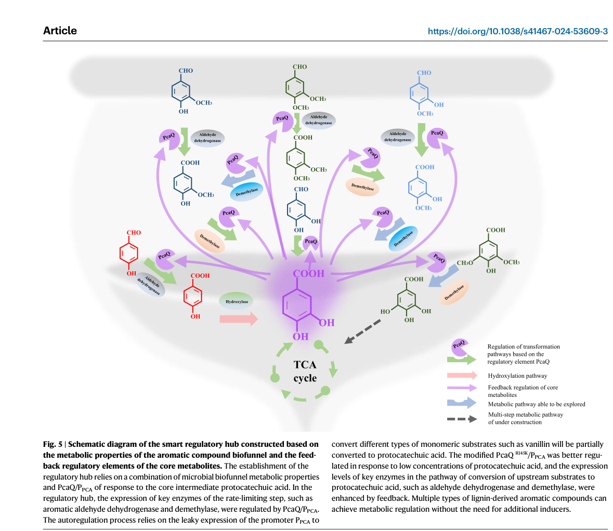

pcaQ (PP_1713; Q88M61) encodes a LysR-family DNA-binding transcriptional regulator of the PcaQ subgroup, associated with the protocatechuate (3,4-dihydroxybenzoate) branch of the beta-ketoadipate pathway. Its core role is regulatory rather than catalytic: it binds promoter/operator DNA from the cytosol and activates transcription of protocatechuate-catabolic genes in response to pathway-derived coinducers. Mechanistic detail (specific KT2440 operon targets, the exact coinducer, and operator architecture) is inferred from the well-characterized Agrobacterium tumefaciens PcaQ homolog and requires KT2440-specific validation; one comparative analysis notes some Pseudomonas pca clusters are reported as IclR-regulated, so the native regulon assignment carries residual uncertainty.
| GO Term | Evidence | Action | Reason |
|---|---|---|---|
|
GO:0003677
DNA binding
|
IEA
GO_REF:0000002 |
KEEP AS NON CORE |
Summary: DNA binding is plausible for a LysR-family transcriptional regulator but less informative than transcription-factor activity and cis-regulatory binding terms. Falcon deep research notes PcaQ binds promoter/operator regions on the bacterial chromosome.
Reason: Retain as a broad molecular function while treating DNA-binding transcription factor activity as the clearer annotation. The HTH lysR-type domain (UniProt FT DOMAIN 7..64) provides the DNA-binding capability.
Supporting Evidence:
file:PSEPK/pcaQ/pcaQ-uniprot.txt
SubName: Full=Transcriptional regulator PcaQ
file:PSEPK/pcaQ/pcaQ-uniprot.txt
DR InterPro; IPR012787; TF_PcaQ
file:PSEPK/pcaQ/pcaQ-deep-research-falcon.md
PcaQ is expected to function as a **cytosolic DNA-binding protein** that regulates transcription by binding promoter/operator regions on the bacterial chromosome
|
|
GO:0003700
DNA-binding transcription factor activity
|
IEA
GO_REF:0000002 |
ACCEPT |
Summary: The LysR-family PcaQ protein identity supports DNA-binding transcription factor activity. Falcon deep research confirms PcaQ is a LysR-type regulator, and the best-characterized homolog acts specifically as a transcriptional activator of protocatechuate-catabolic genes.
Reason: The UniProt name, LysR-family assignment, and PcaQ-specific InterPro/TIGRFAM domain are consistent with a pathway transcription factor. Homology evidence (A. tumefaciens PcaQ) indicates an activator role, so the more specific GO:0001216 (DNA-binding transcription activator activity) is proposed as a refinement.
Supporting Evidence:
file:PSEPK/pcaQ/pcaQ-uniprot.txt
SubName: Full=Transcriptional regulator PcaQ
file:PSEPK/pcaQ/pcaQ-uniprot.txt
DR InterPro; IPR012787; TF_PcaQ
file:PSEPK/pcaQ/pcaQ-deep-research-falcon.md
PcaQ belongs to the **LysR family** of bacterial transcriptional regulators, a large family frequently involved in controlling catabolic pathways
file:PSEPK/pcaQ/pcaQ-deep-research-falcon.md
PcaQ is a LysR-type transcriptional activator** of protocatechuate-catabolic genes
|
|
GO:0005829
cytosol
|
IEA
GO_REF:0000118 |
KEEP AS NON CORE |
Summary: Cytosol is a plausible bacterial location for a soluble transcriptional regulator, but this is not the core biological role. Falcon deep research notes PcaQ is expected to act as a cytosolic DNA-binding protein that binds promoter/operator regions on the chromosome.
Reason: Retain as a non-core location annotation; there is no evidence for membrane or organellar localization, and a LysR-family regulator acts on chromosomal DNA from the cytosol.
Supporting Evidence:
file:PSEPK/pcaQ/pcaQ-uniprot.txt
DR GO; GO:0005829; C:cytosol; IEA:TreeGrafter
file:PSEPK/pcaQ/pcaQ-deep-research-falcon.md
PcaQ is expected to function as a **cytosolic DNA-binding protein** that regulates transcription by binding promoter/operator regions on the bacterial chromosome
|
|
GO:0006355
regulation of DNA-templated transcription
|
IEA
GO_REF:0000120 |
KEEP AS NON CORE |
Summary: Regulation of DNA-templated transcription is correct but broad for a pathway-specific regulator. Falcon deep research supports the regulatory role and notes PcaQ homologs also exhibit negative autoregulation of their own promoter, so this broad parent term is appropriate.
Reason: The more specific positive-regulation and transcription-factor terms better capture the functional inference; this broad term is retained as it also covers the autoregulatory (negative) activity reported for PcaQ homologs.
Supporting Evidence:
file:PSEPK/pcaQ/pcaQ-uniprot.txt
SubName: Full=Transcriptional regulator PcaQ
file:PSEPK/pcaQ/pcaQ-uniprot.txt
DR InterPro; IPR012787; TF_PcaQ
file:PSEPK/pcaQ/pcaQ-deep-research-falcon.md
pcaQ is divergently transcribed** relative to the promoter it activates and exhibits **strong negative autoregulation**
|
|
GO:0019619
3,4-dihydroxybenzoate catabolic process
|
IEA
GO_REF:0000002 |
MARK AS OVER ANNOTATED |
Summary: A direct 3,4-dihydroxybenzoate (protocatechuate) catabolic process annotation overstates the role of PcaQ. Falcon deep research confirms PcaQ is a LysR-type transcriptional activator of protocatechuate-catabolic genes, i.e. it regulates the pathway rather than catalyzing any step. Falcon also flags uncertainty that some Pseudomonas pca clusters are reported as IclR-regulated, so even the regulatory link to this specific KT2440 pathway is not fully proven.
Reason: PcaQ is a transcriptional regulator, not a catalytic enzyme in protocatechuate breakdown. A regulation term (positive regulation of transcription) is more appropriate than direct pathway participation. The InterPro2GO assignment of this catabolic-process term to a regulator reflects the pathway association, not enzymatic involvement.
Supporting Evidence:
file:PSEPK/pcaQ/pcaQ-uniprot.txt
SubName: Full=Transcriptional regulator PcaQ
file:PSEPK/pcaQ/pcaQ-uniprot.txt
DR InterPro; IPR012787; TF_PcaQ
file:PSEPK/pcaQ/pcaQ-deep-research-falcon.md
PcaQ is a LysR-type transcriptional activator** of protocatechuate-catabolic genes
file:PSEPK/pcaQ/pcaQ-deep-research-falcon.md
in some *Pseudomonas* contexts including KT2440/PRS2000, the pca cluster is described as regulated by **IclR-type regulators**
|
|
GO:0045893
positive regulation of DNA-templated transcription
|
IEA
GO_REF:0000002 |
ACCEPT |
Summary: Positive regulation of DNA-templated transcription is the best available process-level description for PcaQ regulatory function. Falcon deep research shows the best-characterized PcaQ homolog (A. tumefaciens) is a LysR-type transcriptional activator of the pcaDCHGB protocatechuate-catabolic operon, whose activation depends on pathway-derived coinducers.
Reason: The protein is annotated as a transcriptional regulator in the LysR family with the PcaQ-specific InterPro/TIGRFAM domain, and homology evidence indicates an activator role, supporting positive regulation of pathway gene transcription.
Supporting Evidence:
file:PSEPK/pcaQ/pcaQ-uniprot.txt
SubName: Full=Transcriptional regulator PcaQ
file:PSEPK/pcaQ/pcaQ-uniprot.txt
DR InterPro; IPR012787; TF_PcaQ
file:PSEPK/pcaQ/pcaQ-deep-research-falcon.md
PcaQ is a ~311 aa **LysR-type transcriptional activator** that activates transcription of **pcaD / pcaDCHGB**-associated protocatechuate-catabolic genes
file:PSEPK/pcaQ/pcaQ-deep-research-falcon.md
Activation depends on **coinducers** formed during PCA catabolism, including **β-carboxy-cis,cis-muconate** and **γ-carboxymuconolactone**
|
Q: Which KT2440 pca promoters are directly bound and activated by PcaQ, and what aromatic intermediate acts as the signal?
Suggested experts: Pseudomonas transcription regulation experts
Experiment: Combine PcaQ ChIP-seq or DAP-seq with promoter reporter assays during growth on protocatechuate and upstream aromatics.
Type: regulon mapping
The research report should be a detailed narrative explaining the function, biological processes, and localization of the gene product. Citations should be given for all claims.
You should prioritize authoritative reviews and primary scientific literature when conducting research. You can supplement
this with annotations you find in gene/protein databases, but these can be outdated or inaccurate.
We are specifically interested in the primary function of the gene - for enzymes, what reaction is catalyzed, and what is the substrate specificity? For transporters, what is the substrate? For structural proteins or adapters, what is the broader structural role? For signaling molecules, what is the role in the pathway.
We are interested in where in or outside the cell the gene product carries out its function.
We are also interested in the signaling or biochemical pathways in which the gene functions. We are less interested in broad pleiotropic effects, except where these elucidate the precise role.
Include evidence where possible. We are interested in both experimental evidence as well as inference from structure, evolution, or bioinformatic analysis. Precise studies should be prioritized over high-throughput, where available.
The target protein is PcaQ from Pseudomonas putida strain KT2440 (ATCC 47054), encoded by pcaQ / PP_1713 and annotated as a LysR-family transcriptional regulator associated with protocatechuate catabolism (protocatechuate branch of aromatic metabolism). This is explicitly stated in KT2440 genomic-context literature (pcaQ, PP1713; protocatechuate catabolism). (santos2004insightsintothe pages 14-15)
Important ambiguity note: The symbol pcaQ is also used for homologous regulators in other bacteria (e.g., Agrobacterium tumefaciens, Ralstonia eutropha). In the retrieved corpus, the deepest mechanistic characterization of “PcaQ” comes from A. tumefaciens, and the most recent engineering/structural modeling comes from R. eutropha; these must be treated as homology-based context, not direct KT2440 evidence. (parke1996characterizationofpcaq pages 5-6, parke1996characterizationofpcaq pages 4-5, zhao2024ligninvalorizationto pages 6-7)
PcaQ belongs to the LysR family of bacterial transcriptional regulators, a large family frequently involved in controlling catabolic pathways, including aromatic compound degradation. KT2440 literature explicitly places pcaQ (PP1713) among LysR-family regulators linked to aromatic metabolism (protocatechuate catabolism). (santos2004insightsintothe pages 14-15)
Mechanistically, the best-described PcaQ homolog (A. tumefaciens) behaves as a transcriptional activator whose activity is modulated by pathway intermediates (coeffectors/coinducers), and it can also exert negative autoregulation on its own promoter. (parke1996characterizationofpcaq pages 4-5)
Protocatechuate (3,4-dihydroxybenzoate; PCA) is a central “hub” intermediate in aerobic aromatic compound degradation. Many lignin-derived or plant-derived aromatics can be converted into PCA and then further metabolized through the protocatechuate branch of the β-ketoadipate pathway, ultimately yielding central metabolites (e.g., acetyl-CoA, succinyl-CoA) that feed into core metabolism. This “hub” concept is exploited in modern synthetic biology designs that sense PCA as an intracellular signal of aromatic flux. (zhao2024ligninvalorizationto pages 6-7)
From KT2440-focused genome context, pcaQ (PP1713) is identified as a LysR-family regulator associated with protocatechuate catabolism. (santos2004insightsintothe pages 14-15)
Limitation: In the retrieved KT2440 sources, explicit details are not provided for:
- the precise pca operon(s) controlled by KT2440 PcaQ,
- the effector/coinducer for KT2440 PcaQ,
- the DNA-binding site / operator sequence,
- direct genetics (ΔpcaQ phenotypes) or ChIP/EMSA evidence.
These missing details are critical for “gold-standard” functional annotation and would require KT2440-specific primary studies (not present in the retrieved set). This is consistent with a broader caution in comparative work: regulatory architectures for PCA catabolic clusters can differ across taxa/strains, so cross-species assumptions can be misleading. (romerosilva2013genomicandfunctional pages 11-12)
Because KT2440 PcaQ is annotated as an LTTR linked to PCA catabolism (direct), it is biologically plausible that it functions analogously to PcaQ homologs in other Proteobacteria. The best-described PcaQ homolog in the retrieved set is from Agrobacterium tumefaciens, where:
- PcaQ is a LysR-type transcriptional activator of protocatechuate-catabolic genes (notably a promoter controlling pcaDCHGB, which includes pcaHG encoding protocatechuate 3,4-dioxygenase subunits). (parke1995supraoperonicclusteringof pages 1-1, parke1996characterizationofpcaq pages 4-5)
- Activation depends on coinducers formed during PCA catabolism, including β-carboxy-cis,cis-muconate and γ-carboxymuconolactone. (parke1996characterizationofpcaq pages 5-6)
- pcaQ is divergently transcribed relative to the promoter it activates and exhibits strong negative autoregulation (ligand-dependent repression of its own promoter). (parke1996characterizationofpcaq pages 4-5)
These features are typical of many LTTR systems (divergent organization; effector-modulated activation; autoregulation), and they provide a reasonable mechanistic template when interpreting KT2440 PcaQ, while remaining explicitly non-definitive for KT2440 without direct experimentation. (parke1996characterizationofpcaq pages 4-5)
Taken together, the most supportable KT2440-specific functional annotation statement from the retrieved evidence is:
KT2440 PcaQ (PP_1713; Q88M61) is a LysR-family transcriptional regulator implicated in controlling protocatechuate catabolism (protocatechuate branch of aromatic metabolism). (santos2004insightsintothe pages 14-15)
More granular mechanistic claims (specific operon targets, exact coinducer chemistry, binding-site architecture) are best presented as homology-informed hypotheses, supported by the A. tumefaciens PcaQ literature but requiring KT2440 validation. (parke1996characterizationofpcaq pages 4-5, parke1996characterizationofpcaq pages 5-6)
As a LysR-family transcriptional regulator, PcaQ is expected to function as a cytosolic DNA-binding protein that regulates transcription by binding promoter/operator regions on the bacterial chromosome. This inference is consistent with the experimentally characterized PcaQ homolog being a transcriptional activator/autoregulator controlling promoter activity. (parke1996characterizationofpcaq pages 4-5)
A 2024 Nature Communications study implemented PcaQ/PPCA as a PCA-responsive regulatory element in an engineered hub metabolite-based autoregulation (HMA) system (in Ralstonia eutropha H16). PCA was validated as the effector, and the regulator also showed responsiveness to related aromatics (e.g., 4-hydroxybenzoate, vanillate, syringate). (zhao2024ligninvalorizationto pages 6-7)
Rational/design-guided engineering of PcaQ produced variants including R145K, which increased sensitivity/specificity toward PCA at low concentrations. Structural/docking analysis implicated PCA interactions including hydrogen bonding (e.g., Ser115) and hydrophobic contacts, and docking outputs reported binding energies on the order of ~−5.1 to −5.9 kcal/mol (as shown in figure-associated extracts). (zhao2024ligninvalorizationto pages 9-10, zhao2024ligninvalorizationto pages 10-11)
The following figure crops support the regulatory-system schematic and the PCA-binding/docking model for PcaQ and R145K:
- HMA schematic / system context (zhao2024ligninvalorizationto media e0de5507)
- PcaQ–PCA docking / mutant comparison panels (zhao2024ligninvalorizationto media 8ac04529)
A 2024 Microbial Biotechnology paper demonstrates that carbon catabolite repression (CCR) strongly inhibits expression/usage of aromatic degradation pathways in P. putida KT2440, and that inactivation of pyruvate dehydrogenase (aceE) relieves CCR, enabling aromatic compound utilization even in the presence of preferred substrates (e.g., glucose). (moreno2024inactivationofpseudomonas pages 1-2, moreno2024inactivationofpseudomonas pages 10-11)
Quantitatively, in growth experiments with an added aromatic (3-methylbenzoate) and glucose:
- aceE mutant grew on 5 mM 3-methylbenzoate to A600 ~0.4,
- wild type grew on 10 mM glucose to A600 ~0.9,
- aceE mutant still reached A600 ~0.4 with 10 mM glucose + 5 mM 3-methylbenzoate, consistent with relieved CCR enabling induction/usage of the aromatic pathway despite glucose. (moreno2024inactivationofpseudomonas pages 7-9)
While this study does not isolate the protocatechuate branch or pcaQ specifically, it is directly relevant to real-world deployment of KT2440 aromatic catabolism because pca-regulon genes are among the pathways typically impacted by CCR in mixed-substrate environments. (moreno2024inactivationofpseudomonas pages 10-11)
The 2024 HMA system uses PcaQ as an internal sensor for aromatic “hub” flux: diverse lignin-derived aromatics are converted into PCA, which then feeds back to activate PcaQ/PPCA-regulated expression, implementing an autoregulatory control loop. This is a practical pattern for coupling pathway expression to intracellular substrate availability and can reduce burden/toxicity by lowering basal expression. (zhao2024ligninvalorizationto pages 6-7, zhao2024ligninvalorizationto media e0de5507)
A widely used implementation of PCA sensing in KT2440 is a genetically encoded biosensor engineered around PcaU (IclR-family regulator) rather than PcaQ. The optimized sensor (PcaU variant with T147G/D148Y) detects PCA below 0.003 mM with >12-fold contrast ratio and can be applied to strain/variant screening for aromatic funneling into PCA. (jha2018aprotocatechuatebiosensor pages 4-5)
This is included because PCA sensing is often conflated across regulators; for KT2440 functional annotation, it is essential not to misattribute PcaU biosensor properties to PcaQ. (jha2018aprotocatechuatebiosensor pages 4-5)
The 2024 aceE (PDH-null) work provides a concrete strategy to improve aromatic degradation in practical settings where mixtures of carbon sources exist (e.g., waste streams containing sugars/amino acids plus aromatics), by relieving CCR that otherwise suppresses aromatic catabolic gene expression. (moreno2024inactivationofpseudomonas pages 1-2)
The table below consolidates what is KT2440-specific vs homology/application evidence.
| Claim / Concept | Organism & gene/protein | Evidence summary | Relevance to KT2440 PcaQ | Source (include year and DOI/URL if available) |
|---|---|---|---|---|
| KT2440 pcaQ = PP_1713, a LysR-family regulator linked to protocatechuate catabolism | Pseudomonas putida KT2440; pcaQ / PP_1713 / UniProt Q88M61 | KT2440 genome analyses identify pcaQ (PP1713) as a LysR-type transcriptional regulator associated with protocatechuate catabolism / aromatic metabolism. The available KT2440 evidence is annotation-level and pathway-contextual; explicit regulated operons/effectors are not detailed in the retrieved KT2440 passages. (santos2004insightsintothe pages 14-15) | Directly supports target identity and confirms that the queried protein is the correct KT2440 PcaQ rather than a different similarly named regulator from another organism. | dos Santos et al., 2004, Environmental Microbiology; DOI: 10.1111/j.1462-2920.2004.00734.x; URL: https://doi.org/10.1111/j.1462-2920.2004.00734.x (santos2004insightsintothe pages 14-15) |
| Homologous mechanistic inference: PcaQ is a LysR activator with coinducer-dependent activation and strong autoregulation | Agrobacterium tumefaciens; PcaQ | In A. tumefaciens, PcaQ is a ~311 aa LysR-type transcriptional activator that activates transcription of pcaD / pcaDCHGB-associated protocatechuate-catabolic genes. Reported coinducers include β-carboxy-cis,cis-muconate and γ-carboxymuconolactone; activation can be ~100-fold, and pcaQ is strongly negatively autoregulated. PcaQ is divergently transcribed from the promoter it activates. (parke1996characterizationofpcaq pages 5-6, parke2006acquisitionreorganizationand pages 3-5, parke1996characterizationofpcaq pages 4-5) | Mechanistic inference only for KT2440: useful because Q88M61 is also a LysR regulator in protocatechuate catabolism, but these data are not organism-specific proof for KT2440 and should be cited as homologous context, not definitive KT2440 mechanism. | Parke, 1996, Journal of Bacteriology; DOI: 10.1128/jb.178.1.266-272.1996; URL: https://doi.org/10.1128/jb.178.1.266-272.1996 (parke1996characterizationofpcaq pages 5-6, parke1996characterizationofpcaq pages 4-5); Parke, 1997/2006 record, FEMS Microbiology Letters; DOI: 10.1111/j.1574-6968.1997.tb10164.x; URL: https://doi.org/10.1111/j.1574-6968.1997.tb10164.x (parke2006acquisitionreorganizationand pages 3-5) |
| Potential discrepancy / uncertainty: some Pseudomonas pca clusters are reported as IclR-regulated rather than PcaQ-regulated | Pseudomonas spp.; discussion includes P. putida PRS2000/KT2440 and other bacteria | A comparative analysis noted that in some Pseudomonas strains, including reports on PRS2000 and KT2440, the pca gene cluster is described as regulated by IclR-type regulators, while PcaQ-type regulators activate pca genes in other taxa such as Agrobacterium and Sinorhizobium. This indicates regulatory architecture may vary among taxa/strains and creates uncertainty around assigning detailed target operons to KT2440 PcaQ from cross-species literature alone. (romerosilva2013genomicandfunctional pages 11-12) | Important caution for annotation: KT2440 does contain pcaQ/PP_1713, but the exact native regulon, coinducer, and promoter targets require organism-specific evidence; cross-species PcaQ mechanisms cannot be assumed wholesale. | Romero-Silva et al., 2013, genomic/functional analysis of protocatechuate pathway regulation; DOI/URL not clearly available in retrieved record. (romerosilva2013genomicandfunctional pages 11-12) |
| Application: PcaQ as a PCA-responsive regulatory element in an autoregulation system; engineered R145K improves response | Ralstonia eutropha H16 (not KT2440); PcaQ/PPCA | In a 2024 Nature Communications study, PcaQ/PPCA functioned as a protocatechuic acid (PCA)-responsive regulatory element for a hub metabolite-based autoregulation (HMA) system. PCA was validated as the effector; the R145K mutation improved binding/sensitivity, with reported docking free energies around -5.1 to -5.9 kcal/mol and stronger regulation at low PCA. PcaQ/PPCA also showed responsiveness to related aromatics. Figure contexts show PCA-binding models and regulatory comparisons of mutants. (zhao2024ligninvalorizationto pages 9-10, zhao2024ligninvalorizationto pages 10-11, zhao2024ligninvalorizationto pages 6-7, zhao2024ligninvalorizationto media e0de5507, zhao2024ligninvalorizationto media 8ac04529) | Not the KT2440 protein, but highly relevant as a modern application of a PcaQ-family PCA sensor/regulator. It supports the concept that PcaQ-family proteins can be repurposed for lignin-valorization control circuits, while remaining distinct from direct KT2440 functional proof. | Zhao et al., 2024, Nature Communications; DOI: 10.1038/s41467-024-53609-3; URL: https://doi.org/10.1038/s41467-024-53609-3 (zhao2024ligninvalorizationto pages 9-10, zhao2024ligninvalorizationto pages 10-11, zhao2024ligninvalorizationto pages 6-7, zhao2024ligninvalorizationto media e0de5507, zhao2024ligninvalorizationto media 8ac04529) |
| Distinguish from PcaQ: PcaU-based PCA biosensor engineered in P. putida KT2440 | Pseudomonas putida KT2440; PcaU-based sensor (not PcaQ) | A KT2440 whole-cell PCA biosensor was engineered around PcaU, not PcaQ. The optimized variant pPcaU1.2 carried T147G/D148Y mutations and detected exogenous PCA below 0.003 mM with >12-fold contrast ratio; the sensor also responded to catechol. The construct used an engineered promoter/operator on a broad-host-range plasmid with sfGFP output and was optimized by FACS. (jha2018aprotocatechuatebiosensor pages 4-5, jha2018aprotocatechuatebiosensor pages 4-4, jha2018aprotocatechuatebiosensor pages 3-4, jha2018aprotocatechuatebiosensor pages 2-3) | Highly relevant because it demonstrates PCA sensing in KT2440, but it should not be misattributed to PcaQ. This distinction is essential for correct functional annotation of Q88M61/PP_1713. | Jha et al., 2018, Metabolic Engineering Communications; DOI: 10.1016/j.mec.2018.03.001; URL: https://doi.org/10.1016/j.meteno.2018.03.001 (jha2018aprotocatechuatebiosensor pages 4-5, jha2018aprotocatechuatebiosensor pages 4-4, jha2018aprotocatechuatebiosensor pages 3-4, jha2018aprotocatechuatebiosensor pages 2-3) |
Table: This table summarizes the strongest available evidence about the identity, function, mechanistic inference, and applications relevant to PcaQ/pcaQ (Q88M61; PP_1713). It also highlights key uncertainties and distinguishes PcaQ from the separate PcaU-based biosensor literature in Pseudomonas putida KT2440.
High-confidence (KT2440-specific) functional annotation:
- PcaQ (PP_1713; UniProt Q88M61) is a LysR-family transcriptional regulator implicated in regulating protocatechuate catabolism in P. putida KT2440. (santos2004insightsintothe pages 14-15)
Moderate-confidence (homology-informed) mechanistic annotation candidates (require KT2440 validation):
- PcaQ likely functions as an effector/coinducer-responsive transcriptional activator for protocatechuate-catabolic genes and may exhibit negative autoregulation, as demonstrated for a closely studied PcaQ homolog. (parke1996characterizationofpcaq pages 4-5, parke1996characterizationofpcaq pages 5-6)
Key uncertainty:
- A comparative analysis reports that, in some Pseudomonas contexts including KT2440/PRS2000, the pca cluster is described as regulated by IclR-type regulators, underscoring that regulatory wiring can vary and that KT2440 PcaQ’s precise regulon/effector cannot be asserted solely from non-KT2440 PcaQ studies. (romerosilva2013genomicandfunctional pages 11-12)
References
(santos2004insightsintothe pages 14-15): V. A. P. Martins Dos Santos, S. Heim, E. R. B. Moore, M. Strätz, and K. N. Timmis. Insights into the genomic basis of niche specificity of pseudomonas putida kt2440. Environmental microbiology, 6 12:1264-86, Dec 2004. URL: https://doi.org/10.1111/j.1462-2920.2004.00734.x, doi:10.1111/j.1462-2920.2004.00734.x. This article has 340 citations and is from a domain leading peer-reviewed journal.
(parke1996characterizationofpcaq pages 5-6): D. Parke. Characterization of pcaq, a lysr-type transcriptional activator required for catabolism of phenolic compounds, from agrobacterium tumefaciens. Journal of Bacteriology, 178:266-272, Jan 1996. URL: https://doi.org/10.1128/jb.178.1.266-272.1996, doi:10.1128/jb.178.1.266-272.1996. This article has 63 citations and is from a peer-reviewed journal.
(parke1996characterizationofpcaq pages 4-5): D. Parke. Characterization of pcaq, a lysr-type transcriptional activator required for catabolism of phenolic compounds, from agrobacterium tumefaciens. Journal of Bacteriology, 178:266-272, Jan 1996. URL: https://doi.org/10.1128/jb.178.1.266-272.1996, doi:10.1128/jb.178.1.266-272.1996. This article has 63 citations and is from a peer-reviewed journal.
(zhao2024ligninvalorizationto pages 6-7): Yiquan Zhao, Le Xue, Zhiyi Huang, Zixian Lei, Shiyu Xie, Zhenzhen Cai, Xinran Rao, Ze Zheng, Ning Xiao, Xiaoyu Zhang, Fuying Ma, Hongbo Yu, and Shangxian Xie. Lignin valorization to bioplastics with an aromatic hub metabolite-based autoregulation system. Nature Communications, Oct 2024. URL: https://doi.org/10.1038/s41467-024-53609-3, doi:10.1038/s41467-024-53609-3. This article has 46 citations and is from a highest quality peer-reviewed journal.
(romerosilva2013genomicandfunctional pages 11-12): MJ Romero-Silva, V Méndez, L Agullo, and M Seeger. Genomic and functional analyses of the gentisate and protocatechuate ring-cleavage pathways and related 3-hydroxybenzoate and 4-hydroxybenzoate peripheral …. Unknown journal, 2013.
(parke1995supraoperonicclusteringof pages 1-1): D. Parke. Supraoperonic clustering of pca genes for catabolism of the phenolic compound protocatechuate in agrobacterium tumefaciens. Journal of Bacteriology, 177:3808-3817, Jul 1995. URL: https://doi.org/10.1128/jb.177.13.3808-3817.1995, doi:10.1128/jb.177.13.3808-3817.1995. This article has 74 citations and is from a peer-reviewed journal.
(zhao2024ligninvalorizationto pages 9-10): Yiquan Zhao, Le Xue, Zhiyi Huang, Zixian Lei, Shiyu Xie, Zhenzhen Cai, Xinran Rao, Ze Zheng, Ning Xiao, Xiaoyu Zhang, Fuying Ma, Hongbo Yu, and Shangxian Xie. Lignin valorization to bioplastics with an aromatic hub metabolite-based autoregulation system. Nature Communications, Oct 2024. URL: https://doi.org/10.1038/s41467-024-53609-3, doi:10.1038/s41467-024-53609-3. This article has 46 citations and is from a highest quality peer-reviewed journal.
(zhao2024ligninvalorizationto pages 10-11): Yiquan Zhao, Le Xue, Zhiyi Huang, Zixian Lei, Shiyu Xie, Zhenzhen Cai, Xinran Rao, Ze Zheng, Ning Xiao, Xiaoyu Zhang, Fuying Ma, Hongbo Yu, and Shangxian Xie. Lignin valorization to bioplastics with an aromatic hub metabolite-based autoregulation system. Nature Communications, Oct 2024. URL: https://doi.org/10.1038/s41467-024-53609-3, doi:10.1038/s41467-024-53609-3. This article has 46 citations and is from a highest quality peer-reviewed journal.
(zhao2024ligninvalorizationto media e0de5507): Yiquan Zhao, Le Xue, Zhiyi Huang, Zixian Lei, Shiyu Xie, Zhenzhen Cai, Xinran Rao, Ze Zheng, Ning Xiao, Xiaoyu Zhang, Fuying Ma, Hongbo Yu, and Shangxian Xie. Lignin valorization to bioplastics with an aromatic hub metabolite-based autoregulation system. Nature Communications, Oct 2024. URL: https://doi.org/10.1038/s41467-024-53609-3, doi:10.1038/s41467-024-53609-3. This article has 46 citations and is from a highest quality peer-reviewed journal.
(zhao2024ligninvalorizationto media 8ac04529): Yiquan Zhao, Le Xue, Zhiyi Huang, Zixian Lei, Shiyu Xie, Zhenzhen Cai, Xinran Rao, Ze Zheng, Ning Xiao, Xiaoyu Zhang, Fuying Ma, Hongbo Yu, and Shangxian Xie. Lignin valorization to bioplastics with an aromatic hub metabolite-based autoregulation system. Nature Communications, Oct 2024. URL: https://doi.org/10.1038/s41467-024-53609-3, doi:10.1038/s41467-024-53609-3. This article has 46 citations and is from a highest quality peer-reviewed journal.
(moreno2024inactivationofpseudomonas pages 1-2): Renata Moreno, Luis Yuste, Gracia Morales, and Fernando Rojo. Inactivation of pseudomonas putida kt2440 pyruvate dehydrogenase relieves catabolite repression and improves the usefulness of this strain for degrading aromatic compounds. Microbial Biotechnology, Jun 2024. URL: https://doi.org/10.1111/1751-7915.14514, doi:10.1111/1751-7915.14514. This article has 7 citations and is from a peer-reviewed journal.
(moreno2024inactivationofpseudomonas pages 10-11): Renata Moreno, Luis Yuste, Gracia Morales, and Fernando Rojo. Inactivation of pseudomonas putida kt2440 pyruvate dehydrogenase relieves catabolite repression and improves the usefulness of this strain for degrading aromatic compounds. Microbial Biotechnology, Jun 2024. URL: https://doi.org/10.1111/1751-7915.14514, doi:10.1111/1751-7915.14514. This article has 7 citations and is from a peer-reviewed journal.
(moreno2024inactivationofpseudomonas pages 7-9): Renata Moreno, Luis Yuste, Gracia Morales, and Fernando Rojo. Inactivation of pseudomonas putida kt2440 pyruvate dehydrogenase relieves catabolite repression and improves the usefulness of this strain for degrading aromatic compounds. Microbial Biotechnology, Jun 2024. URL: https://doi.org/10.1111/1751-7915.14514, doi:10.1111/1751-7915.14514. This article has 7 citations and is from a peer-reviewed journal.
(jha2018aprotocatechuatebiosensor pages 4-5): Ramesh K. Jha, Jeremy M. Bingen, Christopher W. Johnson, Theresa L. Kern, Payal Khanna, Daniel S. Trettel, Charlie E.M. Strauss, Gregg T. Beckham, and Taraka Dale. A protocatechuate biosensor for pseudomonas putida kt2440 via promoter and protein evolution. Jun 2018. URL: https://doi.org/10.1016/j.meteno.2018.03.001, doi:10.1016/j.meteno.2018.03.001. This article has 54 citations and is from a peer-reviewed journal.
(parke2006acquisitionreorganizationand pages 3-5): Donna Parke. Acquisition, reorganization, and merger of genes: novel management of the β‐ketoadipate pathway in agrobacterium tumefaciens. Fems Microbiology Letters, 146:3-12, Jan 2006. URL: https://doi.org/10.1111/j.1574-6968.1997.tb10164.x, doi:10.1111/j.1574-6968.1997.tb10164.x. This article has 62 citations and is from a peer-reviewed journal.
(jha2018aprotocatechuatebiosensor pages 4-4): Ramesh K. Jha, Jeremy M. Bingen, Christopher W. Johnson, Theresa L. Kern, Payal Khanna, Daniel S. Trettel, Charlie E.M. Strauss, Gregg T. Beckham, and Taraka Dale. A protocatechuate biosensor for pseudomonas putida kt2440 via promoter and protein evolution. Jun 2018. URL: https://doi.org/10.1016/j.meteno.2018.03.001, doi:10.1016/j.meteno.2018.03.001. This article has 54 citations and is from a peer-reviewed journal.
(jha2018aprotocatechuatebiosensor pages 3-4): Ramesh K. Jha, Jeremy M. Bingen, Christopher W. Johnson, Theresa L. Kern, Payal Khanna, Daniel S. Trettel, Charlie E.M. Strauss, Gregg T. Beckham, and Taraka Dale. A protocatechuate biosensor for pseudomonas putida kt2440 via promoter and protein evolution. Jun 2018. URL: https://doi.org/10.1016/j.meteno.2018.03.001, doi:10.1016/j.meteno.2018.03.001. This article has 54 citations and is from a peer-reviewed journal.
(jha2018aprotocatechuatebiosensor pages 2-3): Ramesh K. Jha, Jeremy M. Bingen, Christopher W. Johnson, Theresa L. Kern, Payal Khanna, Daniel S. Trettel, Charlie E.M. Strauss, Gregg T. Beckham, and Taraka Dale. A protocatechuate biosensor for pseudomonas putida kt2440 via promoter and protein evolution. Jun 2018. URL: https://doi.org/10.1016/j.meteno.2018.03.001, doi:10.1016/j.meteno.2018.03.001. This article has 54 citations and is from a peer-reviewed journal.

id: Q88M61
gene_symbol: pcaQ
product_type: PROTEIN
status: DRAFT
taxon:
id: NCBITaxon:160488
label: Pseudomonas putida (strain ATCC 47054 / DSM 6125 / CFBP 8728 / NCIMB 11950 / KT2440)
description: 'pcaQ (PP_1713; Q88M61) encodes a LysR-family DNA-binding transcriptional regulator of the
PcaQ subgroup, associated with the protocatechuate (3,4-dihydroxybenzoate) branch of the beta-ketoadipate
pathway. Its core role is regulatory rather than catalytic: it binds promoter/operator DNA from the
cytosol and activates transcription of protocatechuate-catabolic genes in response to pathway-derived
coinducers. Mechanistic detail (specific KT2440 operon targets, the exact coinducer, and operator
architecture) is inferred from the well-characterized Agrobacterium tumefaciens PcaQ homolog and
requires KT2440-specific validation; one comparative analysis notes some Pseudomonas pca clusters are
reported as IclR-regulated, so the native regulon assignment carries residual uncertainty.'
existing_annotations:
- term:
id: GO:0003677
label: DNA binding
evidence_type: IEA
original_reference_id: GO_REF:0000002
review:
summary: DNA binding is plausible for a LysR-family transcriptional regulator but less informative
than transcription-factor activity and cis-regulatory binding terms. Falcon deep research notes
PcaQ binds promoter/operator regions on the bacterial chromosome.
action: KEEP_AS_NON_CORE
reason: Retain as a broad molecular function while treating DNA-binding transcription factor activity
as the clearer annotation. The HTH lysR-type domain (UniProt FT DOMAIN 7..64) provides the
DNA-binding capability.
supported_by:
- reference_id: file:PSEPK/pcaQ/pcaQ-uniprot.txt
supporting_text: 'SubName: Full=Transcriptional regulator PcaQ'
- reference_id: file:PSEPK/pcaQ/pcaQ-uniprot.txt
supporting_text: DR InterPro; IPR012787; TF_PcaQ
- reference_id: file:PSEPK/pcaQ/pcaQ-deep-research-falcon.md
supporting_text: PcaQ is expected to function as a **cytosolic DNA-binding protein**
that regulates transcription by binding promoter/operator regions on the bacterial
chromosome
- term:
id: GO:0003700
label: DNA-binding transcription factor activity
evidence_type: IEA
original_reference_id: GO_REF:0000002
review:
summary: The LysR-family PcaQ protein identity supports DNA-binding transcription factor activity.
Falcon deep research confirms PcaQ is a LysR-type regulator, and the best-characterized
homolog acts specifically as a transcriptional activator of protocatechuate-catabolic genes.
action: ACCEPT
reason: The UniProt name, LysR-family assignment, and PcaQ-specific InterPro/TIGRFAM domain
are consistent with a pathway transcription factor. Homology evidence (A. tumefaciens PcaQ)
indicates an activator role, so the more specific GO:0001216 (DNA-binding transcription
activator activity) is proposed as a refinement.
supported_by:
- reference_id: file:PSEPK/pcaQ/pcaQ-uniprot.txt
supporting_text: 'SubName: Full=Transcriptional regulator PcaQ'
- reference_id: file:PSEPK/pcaQ/pcaQ-uniprot.txt
supporting_text: DR InterPro; IPR012787; TF_PcaQ
- reference_id: file:PSEPK/pcaQ/pcaQ-deep-research-falcon.md
supporting_text: PcaQ belongs to the **LysR family** of bacterial transcriptional
regulators, a large family frequently involved in controlling catabolic pathways
- reference_id: file:PSEPK/pcaQ/pcaQ-deep-research-falcon.md
supporting_text: PcaQ is a LysR-type transcriptional activator** of protocatechuate-catabolic
genes
- term:
id: GO:0005829
label: cytosol
evidence_type: IEA
original_reference_id: GO_REF:0000118
review:
summary: Cytosol is a plausible bacterial location for a soluble transcriptional regulator, but this
is not the core biological role. Falcon deep research notes PcaQ is expected to act as a
cytosolic DNA-binding protein that binds promoter/operator regions on the chromosome.
action: KEEP_AS_NON_CORE
reason: Retain as a non-core location annotation; there is no evidence for membrane or organellar
localization, and a LysR-family regulator acts on chromosomal DNA from the cytosol.
supported_by:
- reference_id: file:PSEPK/pcaQ/pcaQ-uniprot.txt
supporting_text: DR GO; GO:0005829; C:cytosol; IEA:TreeGrafter
- reference_id: file:PSEPK/pcaQ/pcaQ-deep-research-falcon.md
supporting_text: PcaQ is expected to function as a **cytosolic DNA-binding protein**
that regulates transcription by binding promoter/operator regions on the bacterial
chromosome
- term:
id: GO:0006355
label: regulation of DNA-templated transcription
evidence_type: IEA
original_reference_id: GO_REF:0000120
review:
summary: Regulation of DNA-templated transcription is correct but broad for a pathway-specific regulator.
Falcon deep research supports the regulatory role and notes PcaQ homologs also exhibit
negative autoregulation of their own promoter, so this broad parent term is appropriate.
action: KEEP_AS_NON_CORE
reason: The more specific positive-regulation and transcription-factor terms better capture the functional
inference; this broad term is retained as it also covers the autoregulatory (negative) activity
reported for PcaQ homologs.
supported_by:
- reference_id: file:PSEPK/pcaQ/pcaQ-uniprot.txt
supporting_text: 'SubName: Full=Transcriptional regulator PcaQ'
- reference_id: file:PSEPK/pcaQ/pcaQ-uniprot.txt
supporting_text: DR InterPro; IPR012787; TF_PcaQ
- reference_id: file:PSEPK/pcaQ/pcaQ-deep-research-falcon.md
supporting_text: pcaQ is divergently transcribed** relative to the promoter it
activates and exhibits **strong negative autoregulation**
- term:
id: GO:0019619
label: 3,4-dihydroxybenzoate catabolic process
evidence_type: IEA
original_reference_id: GO_REF:0000002
review:
summary: A direct 3,4-dihydroxybenzoate (protocatechuate) catabolic process annotation overstates
the role of PcaQ. Falcon deep research confirms PcaQ is a LysR-type transcriptional activator
of protocatechuate-catabolic genes, i.e. it regulates the pathway rather than catalyzing any
step. Falcon also flags uncertainty that some Pseudomonas pca clusters are reported as
IclR-regulated, so even the regulatory link to this specific KT2440 pathway is not fully proven.
action: MARK_AS_OVER_ANNOTATED
reason: PcaQ is a transcriptional regulator, not a catalytic enzyme in protocatechuate breakdown.
A regulation term (positive regulation of transcription) is more appropriate than direct pathway
participation. The InterPro2GO assignment of this catabolic-process term to a regulator reflects
the pathway association, not enzymatic involvement.
supported_by:
- reference_id: file:PSEPK/pcaQ/pcaQ-uniprot.txt
supporting_text: 'SubName: Full=Transcriptional regulator PcaQ'
- reference_id: file:PSEPK/pcaQ/pcaQ-uniprot.txt
supporting_text: DR InterPro; IPR012787; TF_PcaQ
- reference_id: file:PSEPK/pcaQ/pcaQ-deep-research-falcon.md
supporting_text: PcaQ is a LysR-type transcriptional activator** of protocatechuate-catabolic
genes
- reference_id: file:PSEPK/pcaQ/pcaQ-deep-research-falcon.md
supporting_text: in some *Pseudomonas* contexts including KT2440/PRS2000, the pca
cluster is described as regulated by **IclR-type regulators**
- term:
id: GO:0045893
label: positive regulation of DNA-templated transcription
evidence_type: IEA
original_reference_id: GO_REF:0000002
review:
summary: Positive regulation of DNA-templated transcription is the best available process-level description
for PcaQ regulatory function. Falcon deep research shows the best-characterized PcaQ homolog
(A. tumefaciens) is a LysR-type transcriptional activator of the pcaDCHGB protocatechuate-catabolic
operon, whose activation depends on pathway-derived coinducers.
action: ACCEPT
reason: The protein is annotated as a transcriptional regulator in the LysR family with the PcaQ-specific
InterPro/TIGRFAM domain, and homology evidence indicates an activator role, supporting positive
regulation of pathway gene transcription.
supported_by:
- reference_id: file:PSEPK/pcaQ/pcaQ-uniprot.txt
supporting_text: 'SubName: Full=Transcriptional regulator PcaQ'
- reference_id: file:PSEPK/pcaQ/pcaQ-uniprot.txt
supporting_text: DR InterPro; IPR012787; TF_PcaQ
- reference_id: file:PSEPK/pcaQ/pcaQ-deep-research-falcon.md
supporting_text: PcaQ is a ~311 aa **LysR-type transcriptional activator** that
activates transcription of **pcaD / pcaDCHGB**-associated protocatechuate-catabolic
genes
- reference_id: file:PSEPK/pcaQ/pcaQ-deep-research-falcon.md
supporting_text: Activation depends on **coinducers** formed during PCA catabolism,
including **β-carboxy-cis,cis-muconate** and **γ-carboxymuconolactone**
references:
- id: GO_REF:0000002
title: Gene Ontology annotation based on UniProt keyword mapping
findings:
- statement: Keyword-based DNA-binding annotations are broad and require review against family/function
context.
- id: GO_REF:0000118
title: TreeGrafter-generated GO annotations
findings:
- statement: TreeGrafter supplies location and pathway/process predictions for review.
- id: GO_REF:0000120
title: Combined automated GO annotation using multiple IEA methods
findings:
- statement: Combined automated methods assign transcription-factor and process annotations that require
curation.
- id: file:PSEPK/pcaQ/pcaQ-uniprot.txt
title: UniProtKB entry for pcaQ
findings:
- supporting_text: 'SubName: Full=Transcriptional regulator PcaQ'
reference_section_type: OTHER
- supporting_text: 'SIMILARITY: Belongs to the LysR transcriptional regulatory family.'
reference_section_type: OTHER
- supporting_text: DR InterPro; IPR012787; TF_PcaQ.
reference_section_type: OTHER
- id: PMID:12534466
title: Genomic analysis of the aromatic catabolic pathways from Pseudomonas putida KT2440
findings:
- statement: KT2440 pathway mapping establishes the pca genes as a protocatechuate/beta-ketoadipate
branch.
- id: file:PSEPK/pcaQ/pcaQ-deep-research-falcon.md
title: Falcon deep research report for pcaQ (Q88M61, PP_1713) in Pseudomonas putida KT2440
findings:
- supporting_text: 'pcaQ / PP_1713** and annotated as a **LysR-family transcriptional
regulator** associated with **protocatechuate catabolism**'
reference_section_type: OTHER
- supporting_text: PcaQ belongs to the **LysR family** of bacterial transcriptional
regulators, a large family frequently involved in controlling catabolic pathways
reference_section_type: OTHER
- supporting_text: PcaQ is a LysR-type transcriptional activator** of protocatechuate-catabolic
genes
reference_section_type: OTHER
- supporting_text: PcaQ is a ~311 aa **LysR-type transcriptional activator** that
activates transcription of **pcaD / pcaDCHGB**-associated protocatechuate-catabolic
genes
reference_section_type: OTHER
- supporting_text: Activation depends on **coinducers** formed during PCA catabolism,
including **β-carboxy-cis,cis-muconate** and **γ-carboxymuconolactone**
reference_section_type: OTHER
- supporting_text: pcaQ is divergently transcribed** relative to the promoter it
activates and exhibits **strong negative autoregulation**
reference_section_type: OTHER
- supporting_text: PcaQ is expected to function as a **cytosolic DNA-binding protein**
that regulates transcription by binding promoter/operator regions on the bacterial
chromosome
reference_section_type: OTHER
- supporting_text: in some *Pseudomonas* contexts including KT2440/PRS2000, the pca
cluster is described as regulated by **IclR-type regulators**
reference_section_type: OTHER
core_functions:
- description: LysR-family (PcaQ subgroup) DNA-binding transcription factor that activates expression
of protocatechuate-catabolic genes in the beta-ketoadipate pathway, with activation modulated by
pathway-derived coinducers (homology-inferred from A. tumefaciens PcaQ).
molecular_function:
id: GO:0003700
label: DNA-binding transcription factor activity
directly_involved_in:
- id: GO:0045893
label: positive regulation of DNA-templated transcription
supported_by:
- reference_id: file:PSEPK/pcaQ/pcaQ-uniprot.txt
supporting_text: 'SubName: Full=Transcriptional regulator PcaQ'
- reference_id: file:PSEPK/pcaQ/pcaQ-uniprot.txt
supporting_text: DR InterPro; IPR012787; TF_PcaQ
- reference_id: file:PSEPK/pcaQ/pcaQ-deep-research-falcon.md
supporting_text: PcaQ is a ~311 aa **LysR-type transcriptional activator** that
activates transcription of **pcaD / pcaDCHGB**-associated protocatechuate-catabolic
genes
- reference_id: file:PSEPK/pcaQ/pcaQ-deep-research-falcon.md
supporting_text: Activation depends on **coinducers** formed during PCA catabolism,
including **β-carboxy-cis,cis-muconate** and **γ-carboxymuconolactone**
proposed_new_terms: []
suggested_questions:
- question: Which KT2440 pca promoters are directly bound and activated by PcaQ, and what aromatic intermediate
acts as the signal?
experts:
- Pseudomonas transcription regulation experts
suggested_experiments:
- description: Combine PcaQ ChIP-seq or DAP-seq with promoter reporter assays during growth on protocatechuate
and upstream aromatics.
experiment_type: regulon mapping
{kind=link}